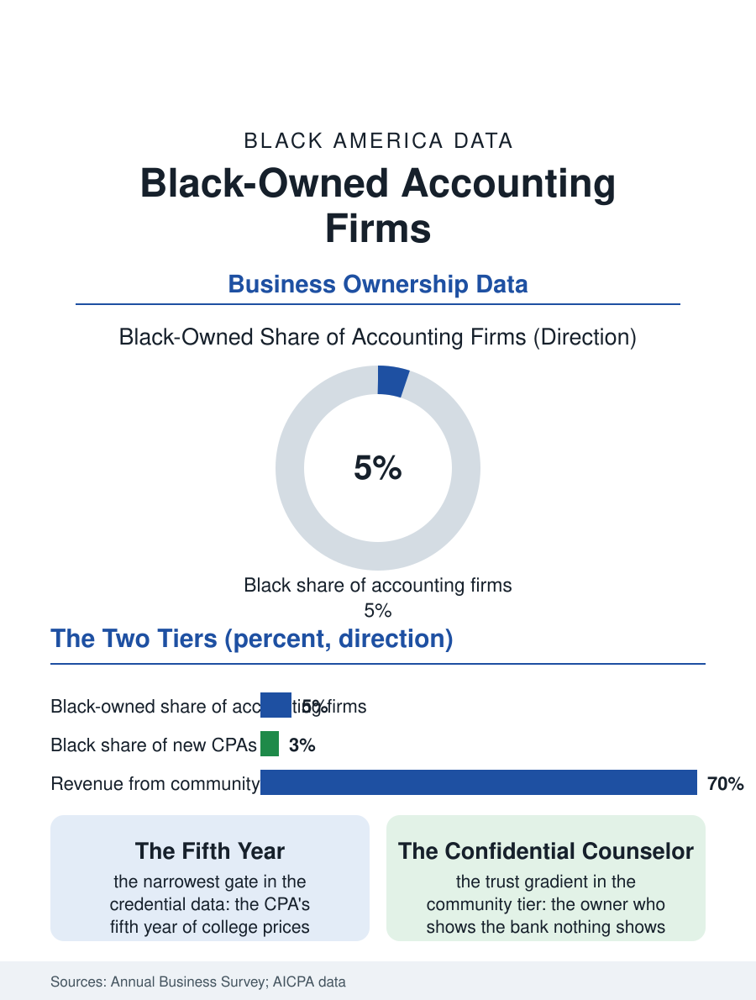

Black Business
The Community's Books: Black-Owned Accounting Firms
The CPA's fifth year is the pipeline's narrowest gate, and the firms that survive it keep the books, and the confidences, of the whole business community. The accounting file.

The Black-owned accounting firm serves the business community's least visible need: the audit, the tax engagement, and the books on which loans and contracts depend, performed by a profession whose partnership ranks remain among the least diverse in American business. The business census counts Black-owned accounting firms in the thousands, most small, with a thin tier of substantial firms auditing public companies and governments. This article reads the accounting file.
The CPA's Long Pipeline
The firm's constraint begins in the credential's arithmetic: the CPA's education requirement, the fifth year of college the profession added a generation ago, prices the credential at a level the wealth file's families reach last, and the profession's Black share of new CPAs has run in the low single digits for decades, making the Black accounting firm's founding partner a survivor of one of the professional pipelines this atlas counts as the leakiest. The firm's market divides into the community tier, the tax and bookkeeping services for the business section's whole population, where the Black accountant is the financial system's interpreter for the barbershop and the contractor alike, and the institutional tier, the audit and assurance work for governments, nonprofits, and the public companies whose audit committees allocate the profession's commanding heights. The institutional tier's history is the file's drama: the Black firms that broke into government auditing, carried by the municipal diversity programs of the big cities and the federal set-asides, built practices auditing the pension funds and the transit authorities, and a handful grew into national firms of genuine scale before the industry's consolidation era absorbed or marginalized most of them, the audit market's concentration in the Big Four being the steepest of any profession in the business section.
Trust, Taxes, and the Community's Books
The community tier's economics run on the calendar: the tax season's surge, the monthly bookkeeping retainers, the loan package preparation whose quality decides the business borrower's fate in the credit files, a service whose value the lending data imply, since the accountant-prepared statement is the small firm's passport to the formal credit system. The Black accountant's distinctive market position is the trust gradient: the business owner who will not show the bank his books shows his accountant everything, and the profession's confidentiality makes the accounting office one of the community's true information exchanges, its proprietor a counselor in the old sense, advising on the entity choice, the succession, the buyout offer, from a seat no other professional occupies. The technology transition pressures the tier from below, the automated bookkeeping platforms and the tax software absorbing the simple work, pushing the firm toward the advisory services whose value the software cannot replicate, the same migration the whole profession is making at a pace set by capital the small firm holds least. The fraud and forensic niche, the governmental accountability work, and the nonprofit sector's audit needs, the churches and the community organizations whose boards require the independent audit, compose the tier's growth segments in the trade data.
The Partnership Question
The accounting file closes on the profession's mirror: the firm exists because the partnership track of the large firms admitted Black accountants as labor while rationing them as owners, in the pattern of the law firm file's, and the independent firm's survival is therefore both a business fact and a professional verdict. The pipeline organizations, the National Association of Black Accountants founded in the profession's exclusion era and now the field's established institution, run the mentorship and scholarship machinery whose output the CPA counts measure, and the profession's recent diversity initiatives, funded at a scale the file has not seen before, are aimed at the fifth-year cost barrier the analysis identifies as the pipeline's narrowest gate. The census counts the Black-owned firms in the thousands, their receipts concentrated in the community tier, their stamps, the CPA license, carrying the same legal authority as the global firms' in the audit opinion's signature line. The books of Black America, its businesses' creditworthiness, its churches' accountability, its governments' audits, pass in meaningful part through these offices, whose partners are the profession's twice-proven survivors, credentialed by the standard and tempered by the ceiling. The file's last entry is the profession's own: the audit opinion is the economy's trust instrument, and the community that produces its own auditors produces the trust in its own name, which the whole business section, in the end, is borrowing against.
More in Black Business
Black-Owned Businesses: Counts, Receipts, and the Representation Gap
About 161,000 Black-owned employer firms and three million solo ventures: how the Census Bureau counts Black business ownership, where firms concentrate, and the gap between population share and business share.
Black Median Net Worth: The Wealth Gap in Federal Reserve Data
The Federal Reserve puts Black median family net worth at $44,900, against $285,000 for White families — about 16 cents on the dollar. The widest gap in economic data.
Black Buying Power: The $1.8 Trillion Consumer Economy
Black buying power is estimated at about $1.8 trillion — larger than the economy of most nations. What the figure measures, who produces it, and what it buys.
Source: U.S. Census Bureau, Annual Business Survey for accounting services; AICPA and National Association of Black Accountants data.